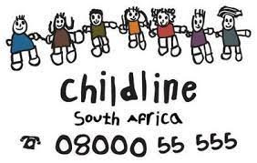

Who am I?
I am a student doing my Bachelor's degree in Information
Technology, eager to bring my passion for technology and
problem-solving to a dynamic and challenging work environment.
Throughout my studies, I honed my skills in programming languages
such as JavaScript, HTML/CSS and C#, as well as database
management (SQL) and software development methodologies. I have
worked on several projects, both individually and in teams, which
have allowed me to demonstrate my ability to learn quickly, think
creatively, and collaborate effectively. I am motivated to
continue growing my knowledge and skills as I take on new
challenges in the tech industry.
In addition to my technical skills, I am also a strong
communicator and a proactive problem-solver. During my academic
and extracurricular activities, I have developed the ability to
communicate technical concepts to both technical and non-technical
audiences, and to work with others to find solutions to complex
problems. I believe that these skills, combined with my technical
knowledge and drive to succeed, make me an excellent candidate for
any organization looking for a dedicated and driven computer
science professional. I am excited to begin my career and look
forward to the opportunity to bring my skills and passion to a new
and dynamic work environment.
Volunteer work experience

Childline
As a former member of ChildLine, a non-profit organization
that protects children from violent environments, my role was
to teach the above-mentioned group about the dangers of
drinking, smoking, their rights and other social
challenges/topics.
SABC
Teen-Zone is an SABC youth radio segment that airs every
Saturday from 09h30 to 10h00 on Thobela FM. It focuses on
uplifting teenagers and discussing issues and/challenges that
they come across.